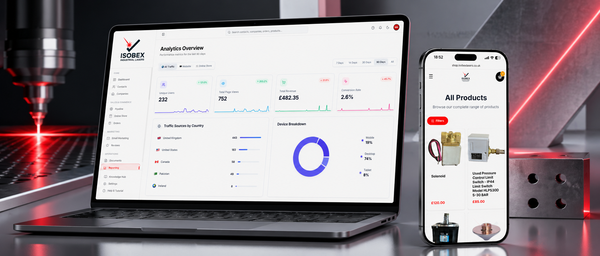

A UK industrial laser-cutting business was running a public store, a contact database, post-sale review chasing, and email and SMS marketing across four disconnected tools. We replaced the lot with a single cohesive platform — checkout to fulfilment, contact to campaign, all in one place.

Isobex Lasers cuts and fabricates parts for UK manufacturers. Their commerce stack had grown the way most do: an off-the-shelf storefront for repeat orders, a separate contact database, an email tool for newsletters, an SMS tool for delivery alerts, a review chase that mostly didn't happen, and a payments dashboard living in its own login.
Every order was a handoff. Stock counts were updated by whoever finished the job. Review requests got sent — when someone remembered. Marketing audiences lived in the email tool but customer purchase history lived elsewhere, which made segmentation guesswork. Refunds were a back-and-forth in chat.
The brief: replace it. One platform that handles the storefront, the CRM, the marketing, and the review chasing — because for a business this size, those things should not be four separate logins with four separate sources of truth.
The storefront sells products, gift cards, and collections through a card-based checkout. The moment a payment confirms, the system deducts inventory, files the order, kicks off the fulfilment workflow, and queues the review request to fire the right number of days after delivery — with configurable follow-ups that stop the moment a review lands.
Contacts are imported from CSV, tagged, and segmented. Every email opened, link clicked, and order placed shows up against the right contact record. The marketing layer sits on top of that data: a template builder with merge tags, scheduled campaigns, and a built-in SMS layer with proper credit accounting.
Operations see one screen: orders flowing from pending to paid to processing to shipped to delivered, with notifications firing on their own at every state change.
Public store with card checkout, gift cards, and collections. Payment confirmation triggers automatic inventory deduction and the fulfilment workflow — no manual sync.
Contact database with tagging, company associations, and customer/lead segmentation. Bulk import from existing tools, then everything flows in automatically.
Post-purchase review request fires after a configurable delay, with follow-up steps that stop the moment a review lands. Public review platforms sync back in automatically.
Builder with merge tags, open and click tracking via pixel and link beacons, built-in SMS with credit accounting and low-balance alerts.
Pending → paid → processing → shipped → delivered. Status changes fire automatic SMS and email notifications. Refunds and inventory restoration run end-to-end.
Multiple card designs — classic, industrial, festive, minimal — with a visual builder and PDF delivery. Sold and redeemed through the same checkout.